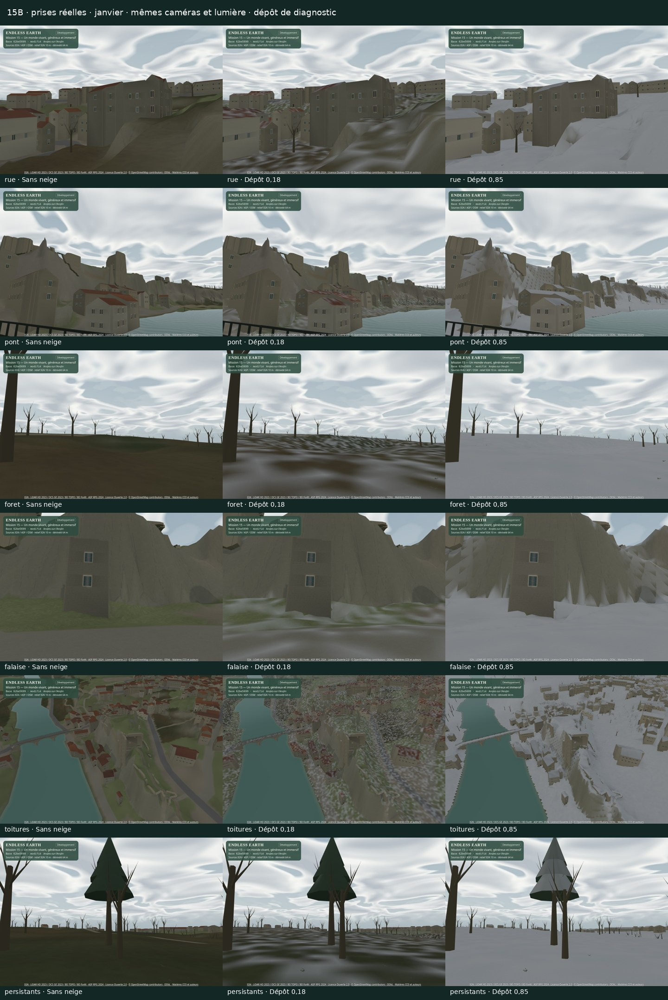
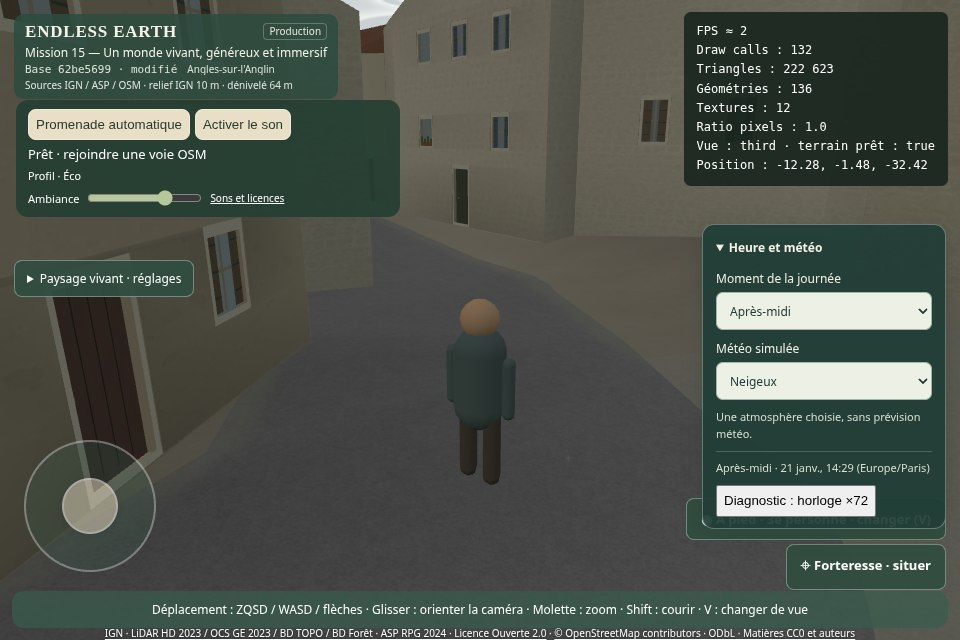
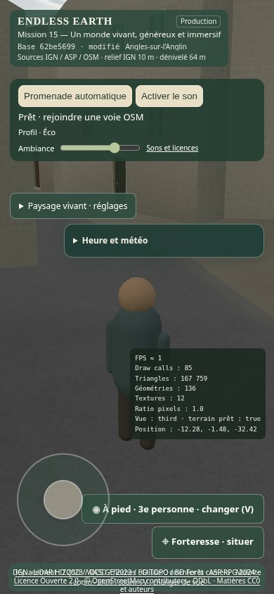

15B · Neige et ciel vivant
Proposition pour validation artistique. 15A accepté par « go ». Arrêt avant 15C. Aucun déploiement ni fusion. Rapport complet · Historique 15A.
Images et vidéos issues du vrai moteur. Les poses d’inspection sont séparées ; seule la vidéo de marche suit une promenade continue. Le niveau 0,18 / 0,85 est un diagnostic reproductible. Les films tournent à vitesse normale sur SwiftShader logiciel, sans prétendre mesurer un GPU physique.
Le paysage transformé

Flocons, début d’accumulation, marche et fonte
Début naturel, puis marche · 120 s · audio réel · mesuresFonte native · 300 s · dépôt initial diagnostique 0,24 · mesuresFlocons faibles · 30 s · intensité 0,15 · mesuresFlocons forts · 30 s · intensité 1 · mesures
Nuages : observation native de quatre minutes
Vent d’advection conservé. Formes lentement renouvelées ; couche basse à 230 m, cohérente avec le champ d’ombres, couche haute à 540 m. Les vidéos retiennent les 120 premières secondes, sans accélération ; les captures couvrent les 240 secondes.
Contrôles du build compilé
Sans injection de sources ni masquage des commandes. État et identité du build.

Menu météo ordinaire · Neigeux
Mobile · commandes existantesToutes les prises et les trois profils
Le pont, son dessous et les vues élevées sont des points d’inspection diagnostiques ; ils ne constituent pas la preuve d’un itinéraire accessible depuis la rue. L’eau reste courante, sans modèle de glace. Les façades verticales et les dessous d’ouvrage conservent leur matériau.
Alternatives mesurées
Essai séparé : retained = livré, coarse = un grain, unprotected = un grain et protection des abris retirée. Cette dernière enfreint le critère d’abri. Les variantes sont injectées seulement pour ce banc. Mesures et méthode.
rue · retainedrue · coarserue · unprotectedforet · retainedforet · coarseforet · unprotectedvallee · retainedvallee · coarsevallee · unprotected Coût graphique
Mesures, allocations, chargement et streaming · Trace · Navigation, audio et erreurs de données · Audit de sources et droits · Validation finale.
Limites : fine apparence colorée, sans épaisseur physique ni congères ; abri approximé à 1,95 m par texel, sans collision feuille par feuille ; aucun nouvel enregistrement de pas sur neige. Le calendrier garde les feuillus hivernaux dégarnis et les persistants feuillés. L’appréciation du naturel reste humaine.